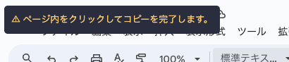

Webページのリンクをコピーするブックマークレット
- 上のボタンをブックマークバーにドラッグ＆ドロップして登録！
- コピーしたいページを開こう。
- 登録したブックマークレットをクリック！
- Slackの入力欄に
Ctrl+Vで貼り付けよう。 - おつかれさま！結果を楽しんでね。
バリエーション
リッチテキスト形式(上のものと同じ)、Markdown形式、プレーンテキスト形式の3種類から選べます。
ボタンをドラッグ＆ドロップしてブックマークバーに登録してください。
ボタンをドラッグ＆ドロップしてブックマークバーに登録してください。
Markdown形式でコピーします。(例:
GitHubやBacklogの貼り付けに利用します。
[デジタル庁](https://www.digital.go.jp/))GitHubやBacklogの貼り付けに利用します。
プレーンテキスト形式でコピーします。(例:
デジタル庁 - https://www.digital.go.jp/)注意事項
自分用なので、使用するサイトによって特殊な挙動があります。
- ページタイトル先頭が
[で始まる場合、対応する]と共にスペースに置き換えます。 - ページタイトル末尾の
| 課題の表示 | Backlog,| Backlogを除去します。 - ページタイトル末尾の
- xxxxxx.esa.ioを除去します。 - ページタイトルの両端の空白は除去します。また、2文字以上連続した空白は1文字に置き換えます。
一部のサイトではセキュリティ都合のため、コピーのためにページ内のクリックが必要となります。
メッセージが表されたら、ページ内のどこかをクリックしてください。

この仕様について技術的な話
このブックマークレットね、
getSelection()
を使ってクリップボードにコピーするんだけど、
一部のサイトじゃ
Trusted HTML
の制約ってやつで、この関数がうまくいかないのよ。
その時は
Clipboard API
を使うんだけど、これがね、ページがフォーカスされてないとダメなのよ。
getSelection() が失敗した場合に、上記のメッセージを表示して、ページ内のクリックを待って、
その後で Clipboard API を使ってコピーするって流れなの。
最初から Clipboard API を使うって手もあるわよ。というか、Clipboard API は getSelection() よりも優秀なのよ。
でもね、これは HTTPSでしか使えないし、一部のサイトじゃ使えないの。
それに、画面クリックが必要になるから、ユーザビリティがちょっとね、落ちるのよ。
結局のところ、皆が少しでもストレスなく、幸せに使えるように工夫してるのよ。